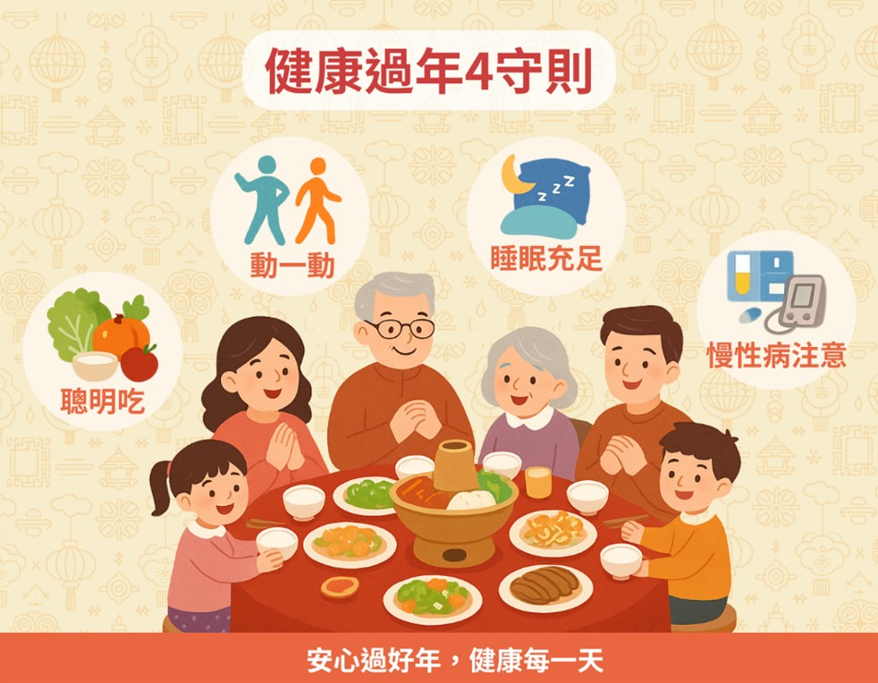
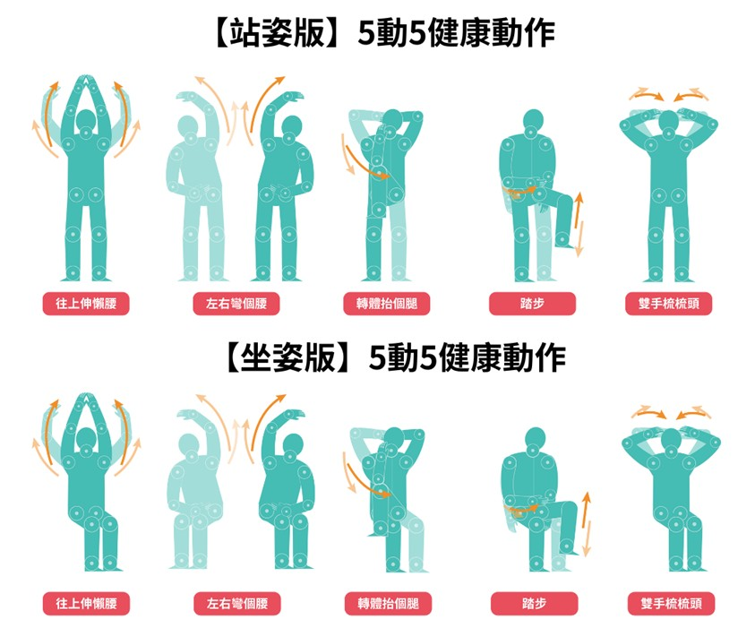
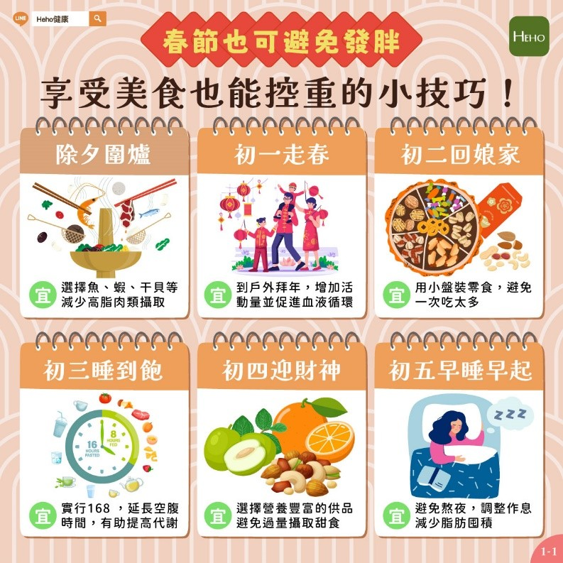
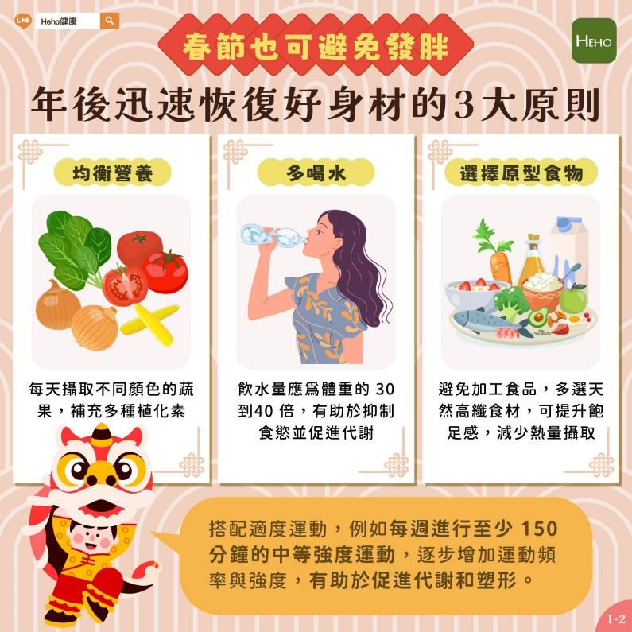

月號－健康大小事
月號－健康大小事|
農曆春節將至，圍爐聚餐、零食點心，總讓人難以抗拒。為避免年節期間體重上升、腸胃不適及三高失控情形，可提前掌握飲食、運動與日常生活原則，在享受團聚氛圍的同時，也保持良好的健康狀態，減少身體負擔，維持健康節奏。 |
|  |
|
飲食注意事項：聰明吃，年後身體不後悔 1.圍爐正餐篇：挑選食材有秘訣 (1)肉類：挑低脂、避加工 2.零食飲料篇：客廳裡的陷阱 (1)零食：小盤盛裝法，吃零食時請先「抓份量」放盤子，避免無意識吃掉整包。 3.用餐習慣篇：改變進食順序與速度 (1)調整進食順序：湯→菜→肉→澱粉，先吃蔬菜可增加飽足感，減少熱量攝取。 |
|
放假不想動？調整活動量以平衡多餘熱量 其實運動可以很生活化，建議每天累積至少30分鐘的身體活動。 1.戶外走春：多利用年假與親友到戶外健走、踏青或騎腳踏車，既能培養感情又能活動筋骨。 |
|  |
|
充足睡眠、作息規律，是維持免疫力的關鍵 1.避免熬夜：放假容易通宵打牌或追劇，但熬夜會增加壓力荷爾蒙皮質醇分泌，容易導致脂肪囤積。 |
|
春節健康小技巧，讓你年節健康壓力少 |
|  |
|  |
|
慢性病、三高族群注意：提前備藥，監測不中斷 1.提前備藥：春節期間醫院門診少，需提前檢視藥量，若不足應提早至醫療院所領藥，切勿自行停藥。 |
|
情緒調節與保暖 1.放鬆情緒：假期中適時放慢步調，給自己休息與喘息的空間，舒緩累積的壓力。 |
|
健康是我們給自己與家人最好的紅包！透過聰明飲食、適度活動、維持規律作息、留意慢性病與用藥，便能享受佳節的歡樂氣氛，也為身體健康保駕護航。 |
|
資料來源
1.健康過年懶人包！4大面向助你享受佳節氣氛也守護身體 |